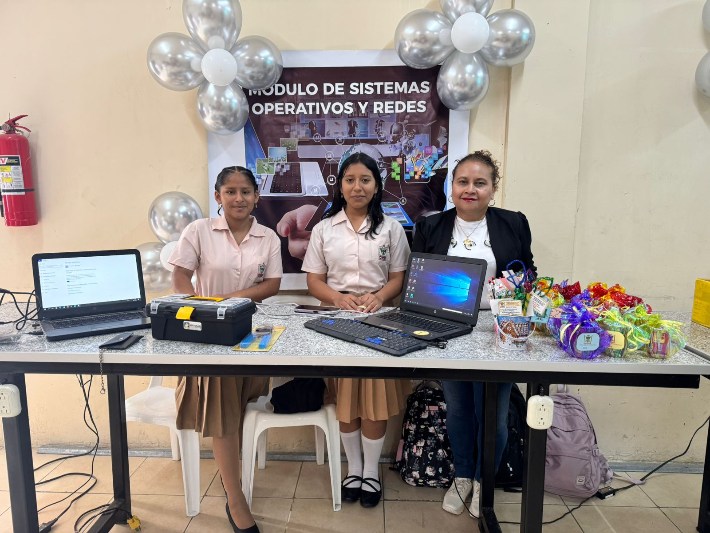

2. Competencias Técnicas
Lista clara de lo que el estudiante será capaz de hacer en las áreas de tecnología clave.

Programación
- > Leer, diseñar y escribir algoritmos.
- > Programar en un lenguaje estructurado y uno orientado a objetos.
Hardware
- ⚙️ Armar y desarmar computadoras.
- ⚙️ Realizar mantenimiento preventivo y correctivo.


Redes
- 🌐 Crear redes LAN básicas.
- 🌐 Cableado estructurado.
- 🌐 Configurar routers/switches básicos.
Software
- 💻 Manejo avanzado de ofimática.
- 💻 Administrar sistemas operativos Windows y Linux.
Soporte técnico
- 💡 Diagnóstico de fallas.
- 💡 Atención al usuario.
- 💡 Instalación de software.